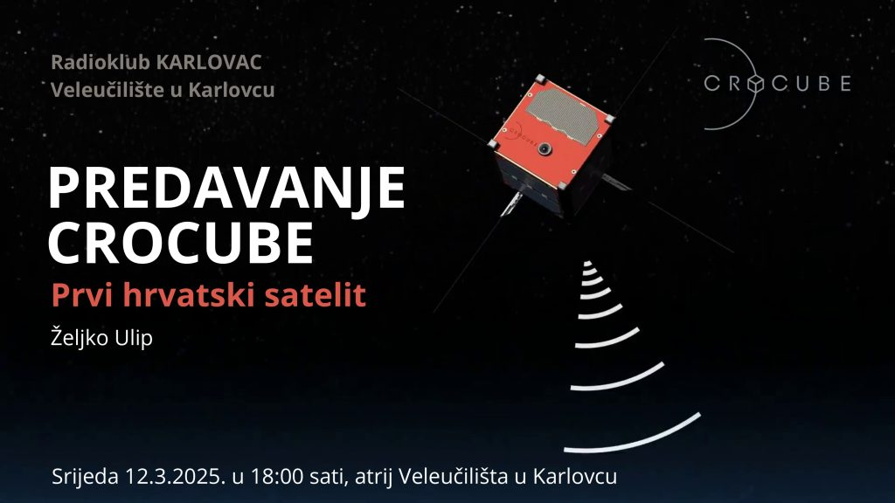

Predavanje Crocube
Pozivamo vas na posebno događanje posvećeno CroCube-u, prvom hrvatskom satelitu, koje će se održati 12. ožujka 2025. u 18:00 sati na Veleučilištu Karlovac.
CroCube je povijesni iskorak Hrvatske u svemirska istraživanja – malen, ali moćan satelit.
Tijekom predavanja od Željka Ulipa saznat ćete više o njegovom razvoju, tehničkim specifikacijama te njegovoj misiji u Zemljinoj orbiti.
